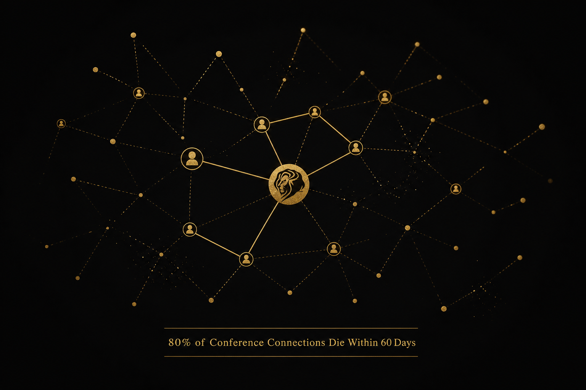

Let me say what everyone on the Croisette is thinking but nobody with a cabana budget will admit: Cannes Lions is one of the most expensive networking failures in business history.
Not because the festival isn't impressive. Not because the creative work doesn't matter. But because the core promise of Cannes — that proximity leads to partnerships — is fundamentally broken, and almost nobody is measuring it.
The Maths of the Croisette
Here's what it costs to play the Cannes Lions game in 2026:
- Delegate pass: Over €4,000
- Entry fees per submission: €675 to €2,765
- Travel (US → Nice, business class): $8,000–$15,000, with fares running 8–12% higher than 2025
- Accommodation: Carlton-tier hotels or yacht charters — budget $2,000–$5,000 per night during festival week
- Activation costs: Top-tier brand activations run $1–5 million; Spotify Beach-level presences cost significantly more
- Platform sponsor delegations: Flying at "significantly higher per-head cost than agency or brand delegations," according to travel industry analysts
Add it up across the thousands of brands, agencies, platforms, and media companies that descend on the Riviera, and the festival economy comfortably exceeds $3 billion when you factor in the full ecosystem of spend — travel, accommodation, hospitality, activations, submissions, sponsorships, and the constellation of satellite events that orbit the official programme.
Brands target an ROI multiplier of 3–5x on their Cannes activations. For a brand spending $3 million on the week, that means they need to generate $9–15 million in measurable value — media reach, PR exposure, pipeline generation, or partnership revenue.
Some do. Most don't. And almost none can prove it.

The Follow-Up Problem
The dirty secret of Cannes — and every major industry conference — is that the value isn't in the meetings. It's in the follow-up. And the follow-up is where the system completely breaks down.
Here's what actually happens:
Day 1–5: Executives collect 50–200 business cards, LinkedIn connections, and WhatsApp contacts. Energy is high. "Let's definitely do something together" is said approximately 4,000 times per day across the festival.
Week 2: The out-of-office replies end. Maybe 30% of contacts receive a follow-up email. Most are generic. "Great meeting you at Cannes — let's find time to connect" with no clear next step.
Month 2: 80% of the relationships formed at Cannes have gone cold. The people who met on the yacht can't remember which conversation led to which opportunity. The CRM has no record of the interaction. The partnership pipeline that justified the $3 million activation spend is a spreadsheet with 15 names and no status updates.
Month 6: The CFO asks for Cannes ROI. The marketing team presents media impressions and "brand sentiment uplift." The actual partnership revenue attributable to Cannes is either unmeasured or, more often, quietly disappointing.
This isn't cynicism. This is the structural reality of event-based networking when it's disconnected from systems.
Why This Keeps Happening
The problem isn't that executives are lazy. It's that Cannes — and the conference industry more broadly — was designed in an era when relationships scaled through personal networks and institutional memory. A CMO who attended Cannes every year for a decade built relationships organically over time.
But the festival has scaled beyond personal networks. Brand delegations are larger. The agenda is denser. The number of potential partners has exploded. And the tools haven't kept up.
Most brands still manage their Cannes networking the same way they did in 2010: business cards, LinkedIn messages, and a vague promise to "follow up after the festival." The infrastructure that powers every other part of the marketing funnel — the CRM, the attribution models, the automated workflows — stops at the conference door.
The result is a $3 billion industry built on relationships with no operating system.
The Fix Nobody Wants to Talk About
The solution isn't less networking. It's networked infrastructure — systems that capture, qualify, and automate the follow-through that turns a Cannes handshake into a signed partnership.
What that actually looks like:
Structured intake. Every meeting at Cannes should generate a data point — not a business card. Who, what they want, what you discussed, the logical next step, and a timeline. Captured digitally, in real-time, not reconstructed from memory on the flight home.
Automated follow-up. Within 48 hours. Personalised. With a specific proposal or next step. Not a "great to meet you" note — a signal of intent.
Pipeline tracking. The relationship moves from "met at Cannes" to a stage in your partnership pipeline with the same rigour you'd apply to a sales deal. Because that's what it is.
Measurement. Six months after Cannes, you should be able to report exactly which partnerships originated at the festival, what revenue they generated, and what your cost-per-partnership was. If you can't, you don't have a networking strategy. You have a travel budget.
This is exactly the problem Concorde App is built to solve — an event-native vertical AI platform that digitises trust and converts high-stakes relationships into measurable pipeline. Not replacing the handshake, but ensuring what happens after it actually counts.
The Question for Cannes 2026
In three weeks, the same cycle will repeat. The rosé will flow. The meetings will happen. The business cards will pile up. And in September, most of the brands that spent millions on the Riviera will struggle to point to a single partnership that wouldn't have happened without Cannes.
The question isn't whether Cannes is worth attending. It is — if you treat it as a deal room, not a party. The question is whether the industry is ready to admit that the current model is broken and invest in the infrastructure to fix it.
The $3 billion says we should. The data says we haven't.
Watch: Neil Patel & Eric Siu break down the real ROI of conference attendance — and why most brands fail to convert networking into revenue.
Related: Read The Enterprise AI Stack Nobody Is Talking About for how the AI-powered infrastructure layer that could solve the Cannes follow-up problem actually works.